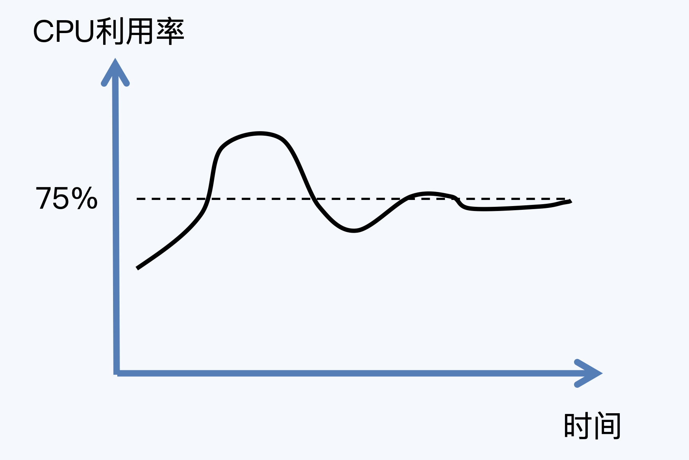
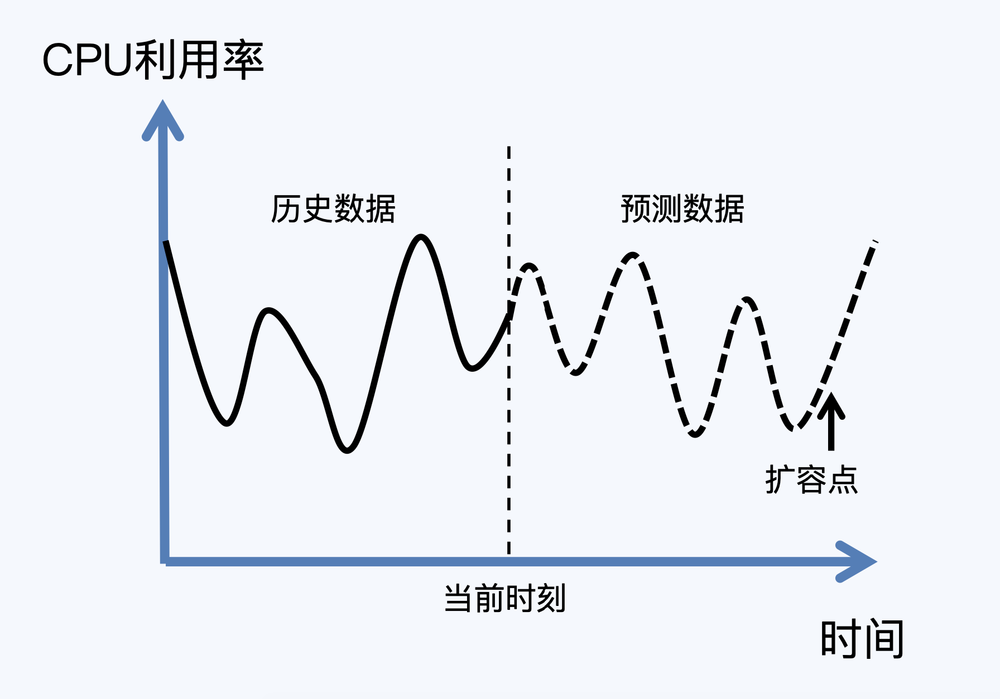

- 00 开篇词 互联网时代，人人肩负容量保障的职责.md.html
- 01 容量保障的目标：容量保障的目标是什么？该如何度量？.md.html
- 02 容量测试与验证：怎样科学实施容量测试？.md.html
- 03 容量指标分析经典5问：响应时间真的是越短越好吗？.md.html
- 04 容量治理的三板斧：扩容、限流与降级.md.html
- 05 全链路压测：系统整体容量保障的“核武器”（上）.md.html
- 06 全链路压测：系统整体容量保障的“核武器”（下）.md.html
- 07 工具进化：如何实现一个分布式压测平台.md.html
- 08 容量预测（上）：第三只眼，通过AI预测服务容量瓶颈.md.html
- 09 容量预测（下）：为不同服务“画像”，提升容量预测准确性.md.html
- 10 浅谈排队论：数学之美，通过建模计算容量.md.html
- 11 与时俱进：云原生下的容量保障新趋势.md.html
- 12 大促容量保障体系建设：怎样做好大促活动的容量保障工作（上）.md.html
- 13 大促容量保障体系建设：怎样做好大促活动的容量保障工作（下）.md.html
- 14 容量保障组织建设：容量保障需要什么样的团队？.md.html
- 15 小公司也能做好容量保障：建设经济实用型的容量保障体系.md.html
- 加餐 学习容量保障的那些经典资料.md.html
- 结束语 做时间的朋友，成功是持续累积而成的.md.html
- 捐赠
11 与时俱进：云原生下的容量保障新趋势
你好，我是吴骏龙。今天，我将与你共同领略在云原生时代下，容量保障有哪些前沿实践与应用。
不知道你之前是否听说过“云原生”这个词，我先来聊一聊云原生的发展历程吧。2013年春，Docker技术的正式开源揭开了云计算的序幕，并迅速席卷全球，同年，Pivotal公司的Matt Stine首次提出了云原生（Cloud Native）的概念，至今其实也不到10年的时间。
云原生还没有标准的定义，每个人的解读也都各不相同，目前比较权威的定义是由云原生计算基金会（CNCF）给出的，摘要如下。
云原生技术有利于各组织在公有云、私有云和混合云等新型动态环境中，构建和运行可弹性扩展的应用。云原生的代表技术包括容器、服务网格、微服务、不可变基础设施和声明式API。这些技术能够构建容错性好、易于管理和便于观察的松耦合系统。结合可靠的自动化手段，云原生技术使工程师能够轻松地对系统作出频繁和可预测的重大变更。
这个定义中的术语比较多，用我的话来提炼，云原生其实就是云（Cloud）和原生（Native）的结合。Cloud表示应用服务是部署在云上的，而不是传统的机房；Native表示服务自始至终都是围绕着云的各项特性所设计的，两者结合起来，目的是最大化的发挥云的价值。
云原生的发展离不开计算机技术的进步，Docker等容器技术首当其冲，它提供了一种优雅的抽象，让开发所需要的灵活性、开放性和运维所关注的标准化、自动化达成平衡。只要一个容器镜像，在任何操作系统上都可以秒级启动隔离环境，这就彻底解耦了应用服务和运行环境，而且是非常轻量级的，这是应用服务能够大规模上云的重要前提。
在此基础上，近几年盛行的无服务器计算（Serverless）进一步释放了云计算的能力，将弹性伸缩、高可用、安全等需求由基础设施实现。Serverless将运行环境和配置做了更彻底的抽象，让开发人员可以将更多的精力放在应用程序的设计和优化上，而不是与基础架构相关的配置和管理上。 可以说，Serverless将云原生推向了一个新的高度。
那么，在云原生逐渐映入我们眼帘的今天，云原生下的容量保障工作又有什么变化和发展趋势呢？我们一起来看看。
云原生容量保障利器：弹性伸缩
随着云原生技术的发展，容量保障工作也出现了不一样的特点，其中最明显的一项就是弹性伸缩，即根据业务需求和流量情况自动调整计算资源，如果弹性伸缩的速度足够快，我们甚至都不需要提前进行容量规划，直接实时扩容就可以了。现在各大云服务厂商都支持按需付费的模式，用户只需要根据应用实际消耗的资源进行付费即可，所以弹性伸缩还能为我们节省成本。
当然，要实现弹性伸缩的能力，基础设施需要有非常强大的资源调度能力，以及对应用各项指标如服务负载、并发量等有非常敏锐的感知能力，能知道在什么时机触发弹性伸缩；同时，还需要具备一定的容量预测能力，能够计算出弹性伸缩的量。
弹性伸缩的另一个好处是，将服务资源管理工作下沉到了基础设施，管控粒度更细，更具备实时性。与之相对的，传统的容量规划工作需要提前一段时间扩容，那么从扩容的时间点到实际产生流量峰值的时间点之间，服务资源是超过实际容量需求的，时间越长，资源浪费越多。
更现实的情况是，业务方一般只管扩容，对于缩容都比较谨慎，正所谓“借钱容易还钱难”，我在阿里本地生活时，全网服务的平均CPU利用率只有不到20%，但推动缩容依然阻力重重，这里的本质问题在于，很多时候应用服务的研发人员自己都不知道需要多少资源是足够的，但又背着很高的稳定性指标，因此往往会选择堆积更多的资源求稳。
这时候弹性伸缩快速高效和底层管理的优势就体现出来了，业务方不需要关心服务资源，弹性伸缩能够帮助你将服务容量始终维持在安全水位，这几乎颠覆了传统的容量保障工作。
用一句话总结，有了云原生技术的加持，容量保障逐渐成为了云基础设施能力的一部分，通过弹性伸缩结合容量预测能力，能够更快速更经济的保障容量安全。
云原生容量保障案例：基于AWS的弹性伸缩策略
下面，我来给你举个例子，看看弹性伸缩策略怎么应用在容量保障上的。这里主要介绍AWS的一些优秀实践。AWS是目前能够成功将容量预测和自动伸缩结合，并投入实际生产运行的云服务商之一，非常值得学习。
从云服务的部署、运维到管理，AWS提供了全生命周期的服务，它把容量预测与弹性伸缩进行结合，然后根据服务资源的情况快速做出容量保障动作，最大化地减少人工成本。同时，如果我们要观察容量伸缩的情况，AWS也提供可以进行特定配置的控制界面。
具体的操作方法是，我们可以通过配置“伸缩计划”对资源伸缩进行管理，伸缩计划分为“动态伸缩” 和“预测伸缩”两种模式，它们的目的都是在服务高负载时保证足够的计算力，而在服务低负载时释放不必要的计算力，下面我具体讲解一下这两种模式的特点。
动态伸缩模式更讲究实时性，能够根据资源利用率的实际变化情况调整容量，宗旨是确保有足够的容量来维持指定的资源利用率。通俗的讲，它有点类似于空调的控温方式，我们只需要设定一个温度，空调会自动调节最终将室温维持在这个温度。

实际场景中，如果我们以动态伸缩模式，设定某服务的CPU利用率目标值为75%，那么当CPU利用率超过75%时，就会触发策略，自动为该服务增加实例，降低CPU利用率；而CPU利用率过低时，又会缩减实例，最终将CPU利用率维持在75%左右。
预测伸缩模式相对复杂一些，主要原理是通过机器学习的方式，分析14天范围内的历史负载数据，预测未来2天的负载指标和容量需求，每天预测一次，有点类似于天气预报，通过分析近期的气象数据来预测未来的天气走势。
预测伸缩模式会引入一个所谓的“伸缩规划”动作，在服务达到预测的容量时提前完成扩容操作。和动态伸缩模式类似，预测伸缩模式的目的也是将资源利用率维持在一定的水平线上。

针对预测伸缩模式，同样来看一个实际的例子，假设我们指定该模式下某服务的平均CPU利用率目标为50%，AWS通过机器学习预测每天上午8点会有一个流量尖刺，造成CPU利用率陡增，那么“伸缩计划”会创建一个“伸缩规划”动作，确保在这个时间点之前完成扩容，保证在未来出现流量尖刺时，CPU利用率能维持在50%左右。
总结一下，AWS为云上应用服务提供了丰富的弹性伸缩策略，现在市场上很多云服务商也基本都在借鉴AWS的做法，提供“动态伸缩”和“预测伸缩”两种自动弹性伸缩模式。对于可预测的场景，比如本地生活外卖场景，中午和晚上是常规的流量高峰期，其余时段为低峰期，这就比较适合采取预测伸缩模式；而对于一些可能有流量突增的市场营销活动场景，采取动态伸缩模式更为合适。
云原生容量保障展望
随着各大公司对云原生的持续投入和重视，我们有理由相信云原生技术在很长一段时间都会得到大力发展，因此容量保障也应与时俱进，跟上时代进步的节奏。
我在上面已经提到过，云原生对弹性伸缩的支持，极大地改变了容量保障的工作方式，但目前其实弹性伸缩的落地情况并不具备太大的规模，在阿里本地生活，我们充其量也就做到了错峰人工对一部分服务器执行“关机不收费”的操作，和云原生的弹性伸缩方式尚有距离。究其原因，我觉得主要有以下几点：
- 容量预测尚未发展到非常成熟的阶段，对容量的预估不够精确，无法支持大规模的自动化弹性伸缩。
- 弹性伸缩的风险较高，特别是缩容操作，有引发线上服务异常的可能性，甚至会直接导致事故的发生。
- 扩缩容速度不够快，无法满足快速弹性伸缩的要求。
对于这些问题，业内目前主要从两个方向在进行探索，第一是通过技术手段减少应用冷启动时间（重新启动服务进程，到服务完全可用的时间），真正实现实时伸缩；第二是结合传统的容量规划手段，准实时的进行扩缩容，当然，这对容量预测的要求也相应提高了。
减少冷启动时间，甚至能帮助做到毫秒级的自动伸缩，不仅能够大幅提升资源利用率，更是提升了运维效率，当流量高峰来的时候再扩容就好了。不过业界目前还没有真正意义上的无侵入式解决方案，看起来GraalVM是个比较有潜力的方向，Java官方也推出了更彻底的AOT（Ahead of Time，预先编译）等措施，都是在往这个方向努力。
而与容量规划相结合的策略，有点类似于我在容量预测的下篇中所提到的服务画像的方式，这个画像建立的越准确，预测的越及时，我们的伸缩动作就可以越逼近实时。这样，即使我们无法做到毫秒级的冷启动，至少也可以保证在较短的空档期内提前完成伸缩动作。
展望云原生时代下的容量保障，我们已经有了很好的实践和探索，相信随着技术的不断革新，应用服务不需要关心容量的梦想终究会得到实现。
总结
云原生时代下，所有的应用服务和基础设施“生在云上”，这意味着从研发模式到运维模式的全方位变革，我们会面对很多前所未有的挑战，但也会给我们带来了不少机遇和进步。对一名容量保障参与者来说，如何顺应云原生时代的技术浪潮，将容量保障工作提升到相应高度，为业务稳定保驾护航，是值得思考和沉淀的。
在这一讲中，我首先介绍了云原生容量保障的一把利器：弹性伸缩，节约成本和业务侵入小是它的两大优点，做到快速的弹性伸缩，甚至能够颠覆传统的容量保障模式。
同时，我也基于AWS介绍了目前业界对弹性伸缩的探索和落地经验，AWS给出了完整的解决方案，支持“动态伸缩”和“预测伸缩”两种自动弹性伸缩模式，能够适配不同业务场景对容量保障的需求。
最后，我对云原生容量保障的发展现状和趋势做了解读，剖析了减少冷启动时间和结合容量规划手段这两种思路，以及行业的一些前沿动态，你也可以结合之前讲到的容量预测的内容，进一步拓展理解。
在云原生技术不断发展的过程中，传统容量保障工作依然重要，让我们一起努力，为容量保驾护航。
课后讨论
如果你正负责一个批处理服务，这个服务没有外部流量，只是周期性地执行某个任务，请问这样的服务适合“动态伸缩”还是“预测伸缩”模式？选择的理由又是什么呢？欢迎与我交流你的想法。
© 2019 - 2023 Liangliang Lee. Powered by gin and hexo-theme-book.